같아 보여도 다른 한자, 유니코드 정규화
영상은 퀴즈로 시작해요. 변수 두 개에 똑같아 보이는 한자 '女'를 넣고 비교하면 False가 나와요. 아래 터미널 마지막 줄이 그 결과예요.
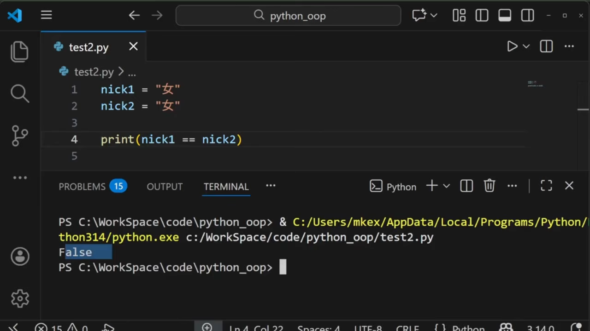
발표자가 게임 회사에 있던 2008년에 실제로 겪은 일이에요. 닉네임 컬럼에 유니크 제약을 걸고 프로시저에서도 중복 검사를 했는데, 같은 닉네임이 두 번 들어갔어요. 원인은 글자가 아니라 코드였어요. 왼쪽 '女'는 U+5973, 오른쪽 '女'는 호환 한자 영역의 U+F981이에요.
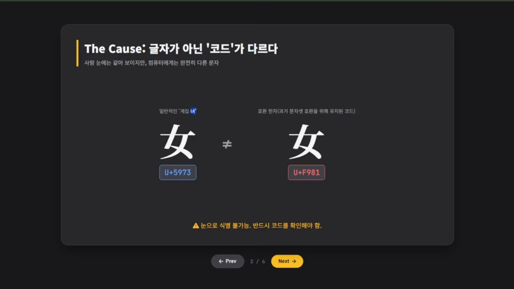
유니코드가 한자를 담는 세 가지 방식
유니코드는 한자를 통합 한자, 호환 한자, 이체자로 나눠 담아요. 가운데 빨간 칸의 호환 한자는 유니코드 이전에 한국·일본·대만 인코딩에 이미 있던 글자를 그대로 쓸 수 있게 따로 마련한 영역이에요. 의미와 모양은 같은데 코드만 다르게 붙어 있어요.
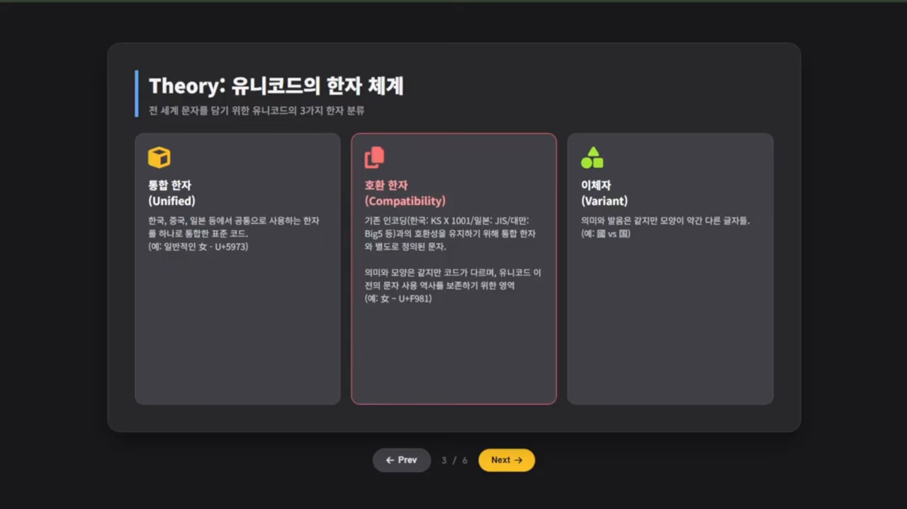
이런 글자는 '女'만이 아니에요. 표의 오른쪽 열 '발생 원인'을 보면 대부분 두음법칙이나 읽는 법 때문에 두 벌이 생겼어요. 李(리/이), 率(률/율), 不(불/부), 金(금/김)이 대표적이에요.
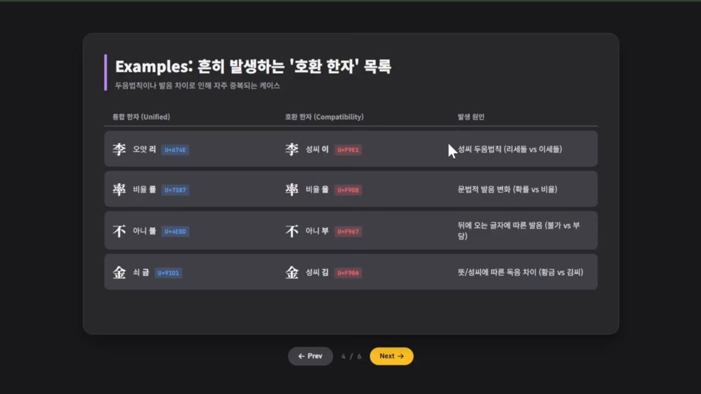
시스템이 오류를 내지는 않아요. 하지만 사람 눈으로는 구분이 안 되니 피싱 아이디를 만들거나 내부 계정을 사칭하는 데 쓰일 수 있어요. 잠재적인 보안 위험이에요.
저장 전에 정규화하기
해결책은 저장하기 전에 유니코드 정규화를 하는 거예요. 슬라이드는 NFC(Normalization Form Canonical Composition)와 NFKC(Normalization Form Compatibility Composition)를 비교하고, 오른쪽 초록 칸의 NFKC를 추천으로 표시해요. 발표자 설명으로는 NFC는 시각적 모양만 유지해서 호환 한자를 그대로 두고, NFKC는 의미가 같은 글자를 표준형으로 합쳐 줘요. 그래서 닉네임 중복 검사나 검색에는 NFKC가 좋다고 해요.
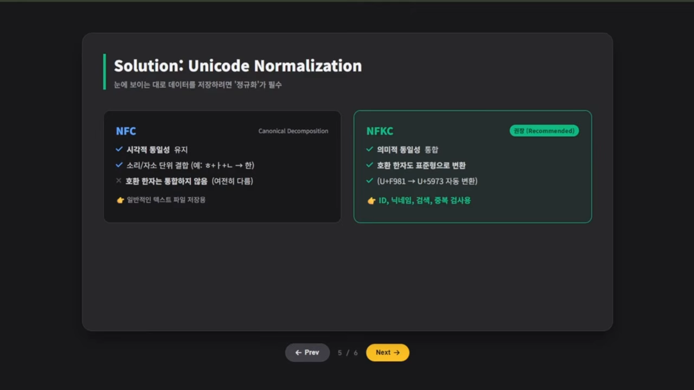
마지막으로 파이썬 unicodedata.normalize('NFKC', nickname)으로 직접 돌려 봐요. 터미널에서 두 글자의 코드가 0x5973과 0xf981로 다르게 찍히고, 정규화 전에는 False, 정규화 후에는 True가 나와요.
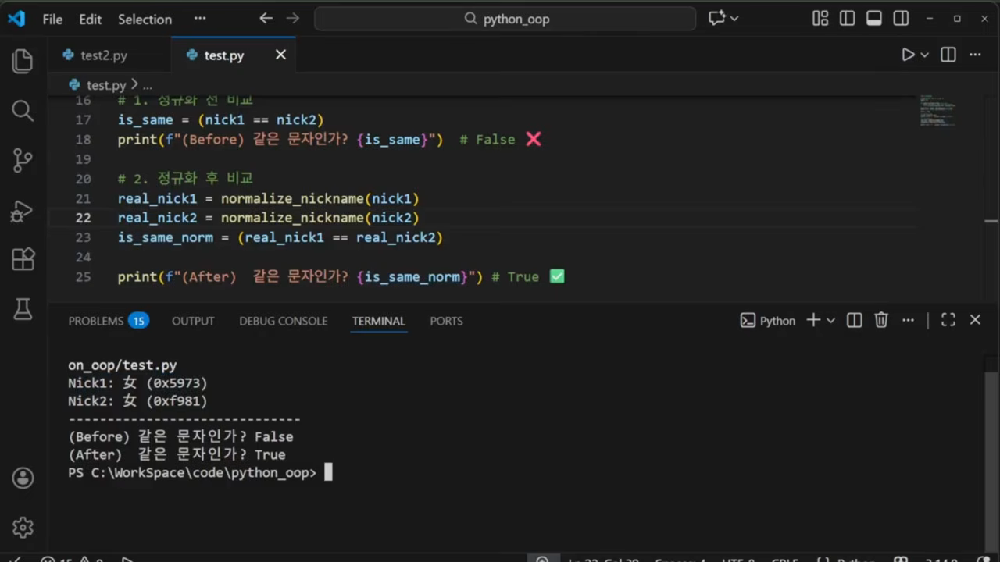
프로세스와 쓰레드, 메모리 구조로 설명하기
면접 단골 질문이에요. 그런데 "메모리 구조 관점에서 설명해 보세요"라는 말이 붙으면 많은 사람이 막혀요. "프로세스는 프로그램이고 쓰레드는 그 안에서 돌아가는 거"라는 답은 틀리진 않지만, 엔지니어 답변으로는 깊이가 없어 보인다는 게 발표자의 진단이에요.
집과 사람 비유
먼저 비유로 감을 잡아요. 왼쪽 프로세스는 집이에요. 옆집이 무너져도 우리 집은 멀쩡한 독립된 공간이에요. 오른쪽 쓰레드는 그 집에 사는 사람이에요. 거실과 주방을 함께 쓰면서 각자 할 일을 해요.
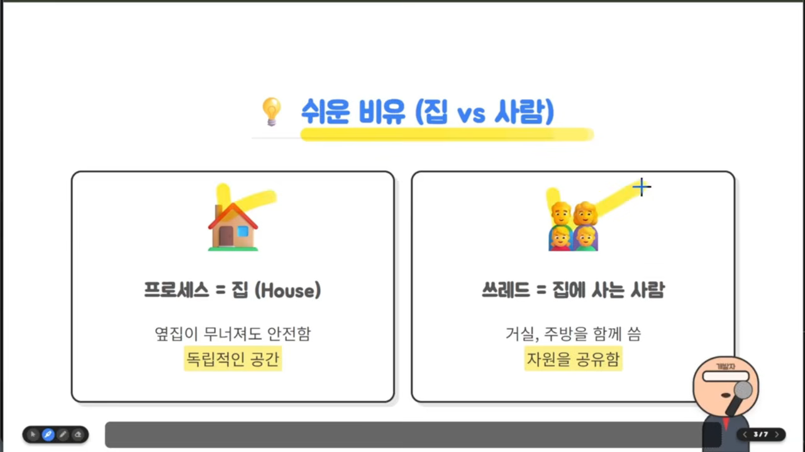
메모리 구조로 보면
발표자가 "오늘의 하이라이트"라고 한 슬라이드예요. 왼쪽 프로세스는 Code, Data, Heap, Stack 네 영역을 모두 따로 가져요. 즉 프로세스마다 독립된 주소 공간이 있고, 서로 대화하려면 IPC(Inter-Process Communication) 같은 별도 통신이 필요해요. 오른쪽 쓰레드는 위쪽 파란 칸처럼 Code, Data, Heap을 함께 쓰고, 아래 빨간 칸처럼 Stack만 쓰레드마다 따로 가져요.
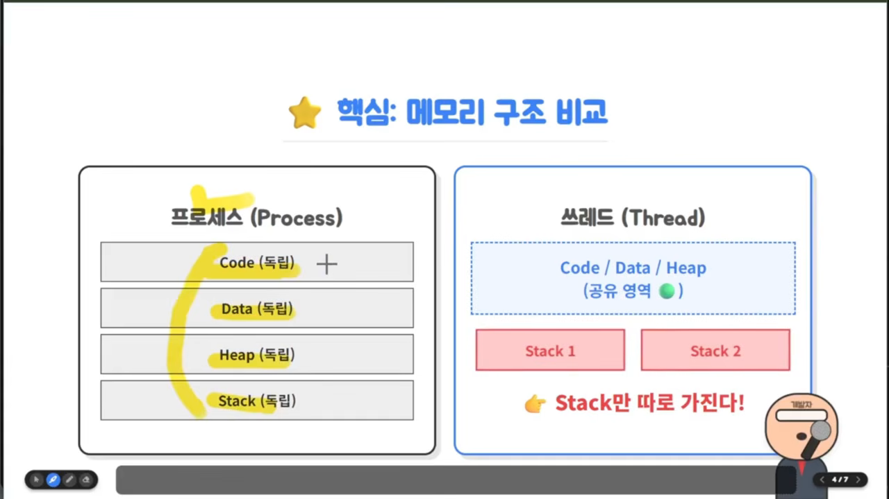
왜 쓰레드가 더 빠를까요
차이는 컨텍스트 스위칭 비용에서 나와요. 빨간 막대인 프로세스 전환은 이사와 같아요. 주소 공간이 바뀌면서 캐시와 메모리 관리가 무거워져요. 파란 막대인 쓰레드 전환은 방문을 열고 거실로 나오는 수준이라, 공유 자원은 그대로 두고 몸만 빠져나오면 돼요.
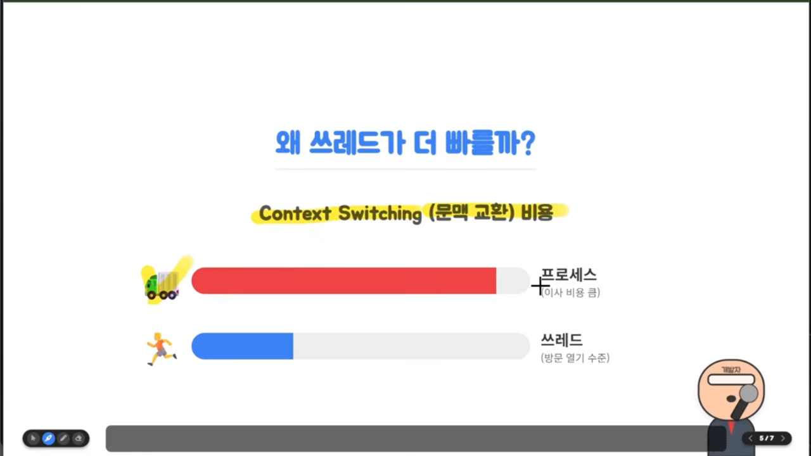
면접 모범 답안
발표자가 정리한 답은 네 줄이에요. 세 번째 줄의 빨간 강조, 'Code, Data, Heap을 공유하고 Stack만 따로'가 면접관이 기다리는 말이에요.
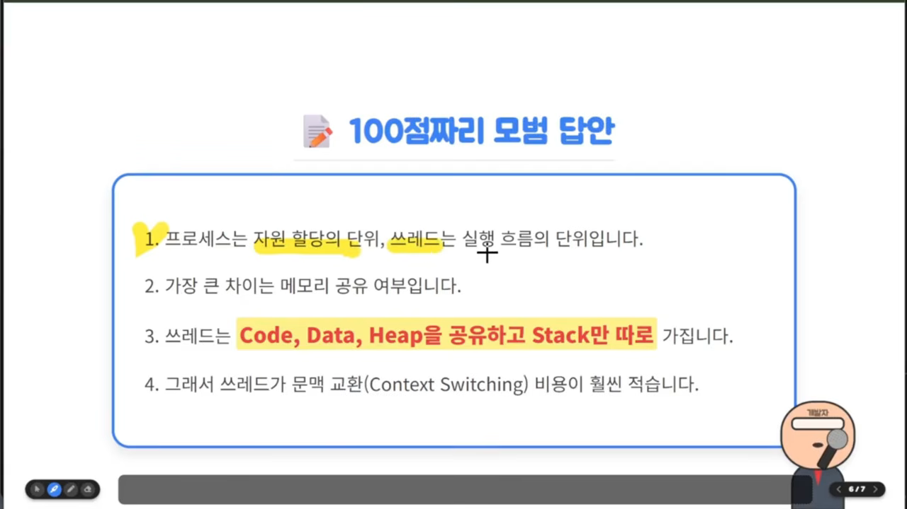
답을 잘하면 꼬리 질문이 따라와요. 멀티프로세스와 멀티쓰레드는 언제 무엇을 쓰는지, 크롬 탭은 프로세스인지 쓰레드인지, 쓰레드 동기화와 데드락은 어떻게 다루는지예요. 영상은 답을 주지 않고 숙제로 남겨요.
메모리 계층과 레이턴시
CPU(Central Processing Unit)는 아주 빠르고 디스크는 아주 느려요. 이 간극을 메우려고 저장 장치를 여러 층으로 쌓은 게 메모리 계층 구조예요. 피라미드 위쪽 CPU 레지스터와 L1 캐시로 갈수록 빠르지만 작고 비싸고, 아래쪽 SSD와 HDD(Hard Disk Drive)로 갈수록 크고 싸지만 느려요.
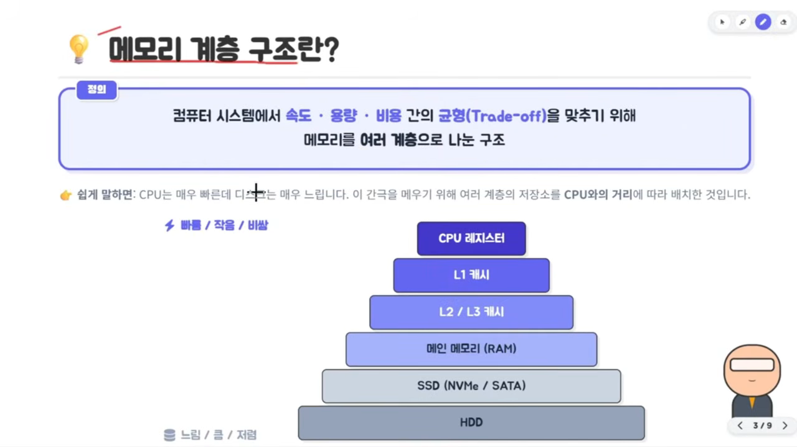
계층별 레이턴시 수치
여기서 레이턴시는 요청을 보내고 응답을 받을 때까지의 시간이에요. 데이터 크기와 상관없는 '접근 자체의 고정 비용'이에요. 표의 노란 줄 RAM(~100ns)을 기준으로 보면, NVMe SSD는 ~20µs로 약 200배, SATA(Serial Advanced Technology Attachment) SSD는 ~100µs로 약 1,000배, HDD는 ~5ms로 약 5만 배 느려요. ns, µs, ms는 각각 1,000배씩 차이가 나요.
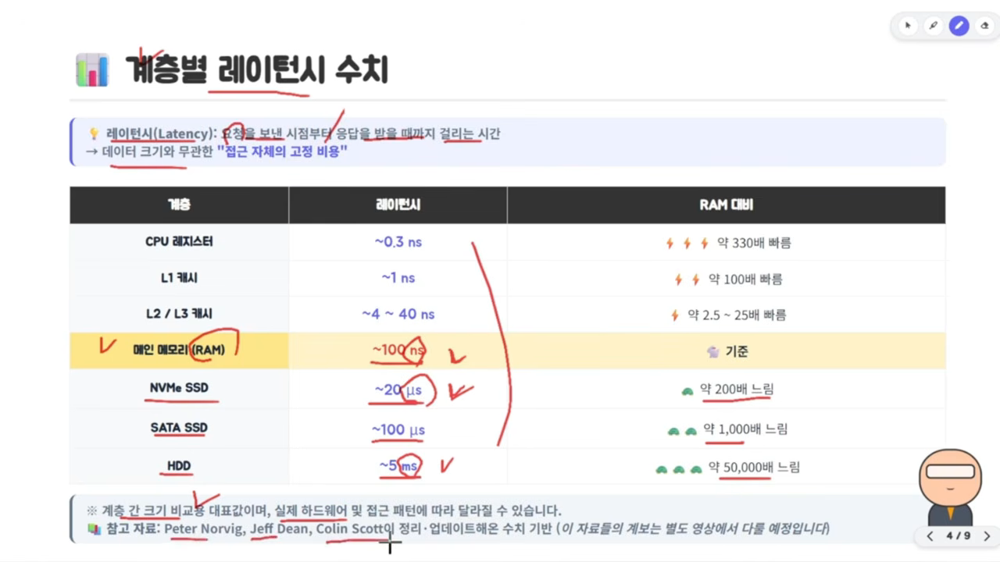
나노초는 감이 안 오니 L1 캐시의 1ns를 1초로 늘려 봐요. 아래 그림은 영상이 든 다섯 계층을 로그 눈금 위에 놓은 거예요. 막대 한 칸이 10배라서, RAM에서 HDD까지 다섯 칸 가까이 벌어져요.
영상 슬라이드에서는 같은 내용을 표로 보여 줘요. 오른쪽 열이 1ns를 1초로 바꾼 시간이에요.
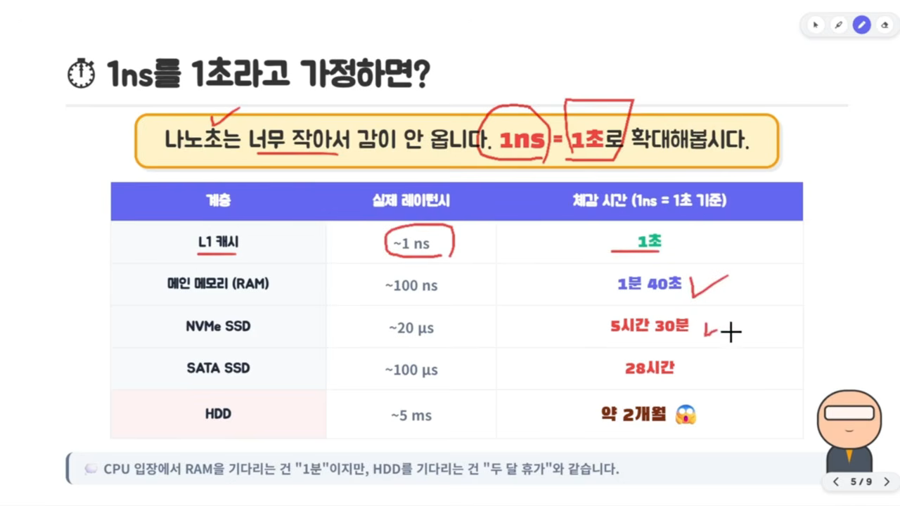
랜덤 액세스와 순차 읽기
앞의 숫자는 모두 랜덤 액세스 기준이에요. 왼쪽 빨간 칸처럼 흩어진 위치로 매번 점프하면 레이턴시가 지배해요. 오른쪽 초록 칸처럼 이어진 데이터를 쭉 읽으면 한 번 접근한 뒤 스트리밍하니 처리량(NVMe는 초당 수 GB)이 지배해요. 같은 NVMe SSD라도 작은 랜덤 읽기 1만 번과 큰 파일 하나를 읽는 건 성능이 크게 달라요. 데이터베이스 인덱스 설계가 중요한 이유예요.
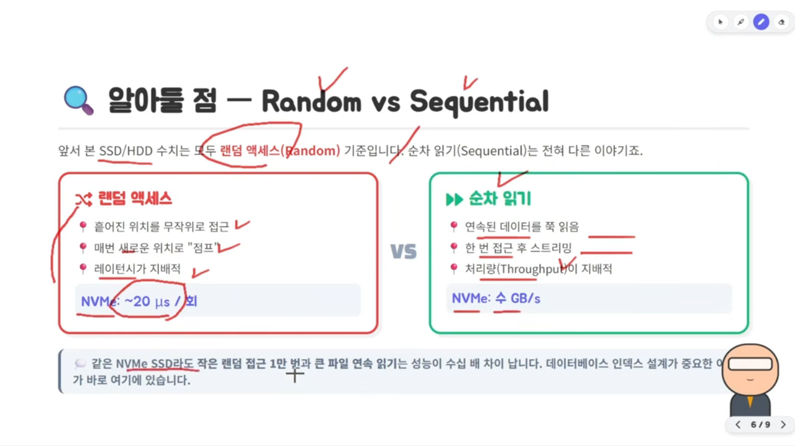
"최신 SSD 썼으니 충분히 빠르겠지?"
실무에서 자주 하는 오해예요. NVMe가 많이 빨라진 건 맞지만 여전히 RAM보다 약 200배 느려요. 그러니 SSD로 바꿨다고 버퍼 캐시나 Redis 같은 공유 캐시를 빼는 건 위험해요. 아래 초록 칸의 세 원칙이 이 섹션의 결론이에요.
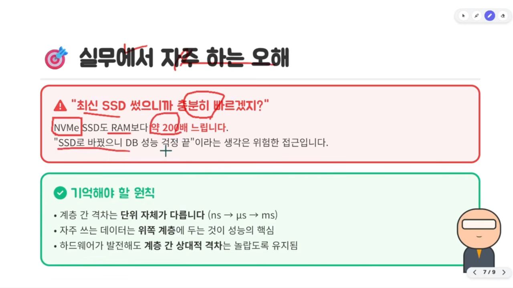
시간 복잡도와 Big-O
영상은 코드 리뷰 장면으로 시작해요. 시니어가 "데이터가 100만 건 들어와도 괜찮나요?"라고 묻자, 주니어가 "DB 인덱스를 타게 설계해서 O(log N)이에요"라고 답해요. 시니어는 좋다고 하면서도 그 아래 이중 for문은 O(N²)이라 서버가 터질 수 있다고 짚어요. 시간 복잡도로 대화하는 장면이에요.
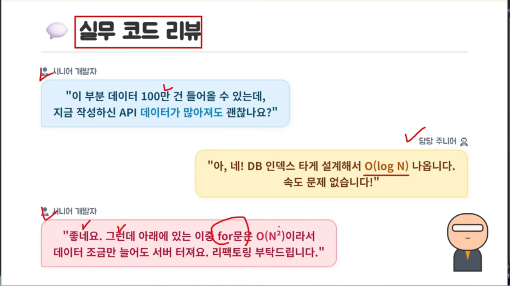
내 PC(Personal Computer)에서는 빨랐는데 서버에서 느린 이유도 같아요. 로컬에는 데이터가 10개뿐이지만 실서비스에서는 1만, 100만 개로 늘어요. 시간 복잡도는 몇 초가 걸렸는지가 아니라, 데이터가 늘 때 연산 횟수가 어떤 비율로 느는지 보는 개념이에요. Big-O 표기법은 그 증가율의 상한을 적는 방법이에요.
대표적인 복잡도
O(1)은 상수 시간이에요. 배열 인덱스로 바로 가거나 해시맵을 조회할 때처럼 데이터가 한 개든 1억 개든 걸리는 시간이 같아요. 자바의 HashMap, 파이썬 dict, Redis의 전역 해시 테이블이 그래요. O(N)은 배열을 처음부터 끝까지 훑거나 테이블을 풀 스캔할 때예요.
O(N²)은 서버를 터뜨리는 주범이에요. 슬라이드의 이중 for문처럼 데이터가 10배 늘면 시간은 100배 늘어요.
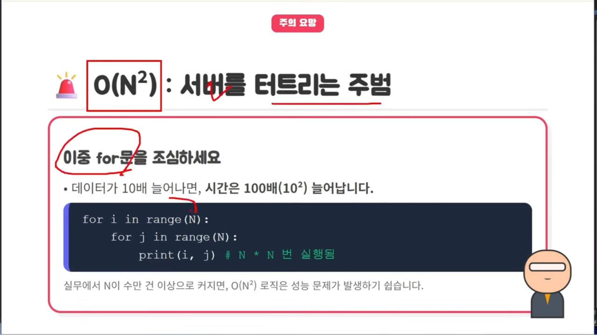
O(log N)은 반씩 줄어드는 탐색이에요. 1부터 100까지 숫자 맞히기 게임에서 "50보다 커요?"로 절반씩 지워 나가는 식이에요. 약 43억 개에서 찾아도 2³² ≈ 43억이니 32번이면 끝나요. 이진 탐색과 DB(Database)의 B-Tree 인덱스가 여기에 속해요.
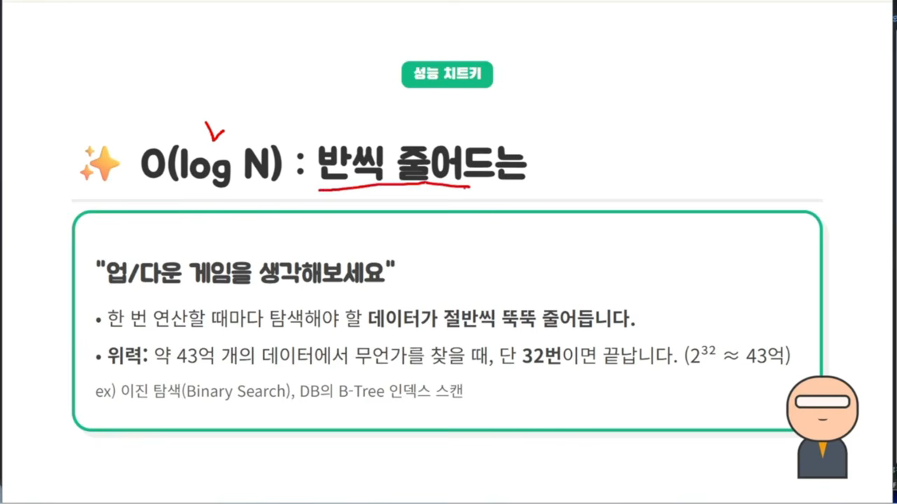
크기 순서는 O(1), O(log N), O(N), O(N log N), O(N²), O(N³), O(2ᴺ), O(N!)이에요. 왼쪽 초록일수록 편하고 오른쪽 빨강일수록 서버가 힘들어요. 발표자는 "일로 엔로 엔제 엔삼 이엔 팩토리얼"처럼 소리로 외웠다고 해요.
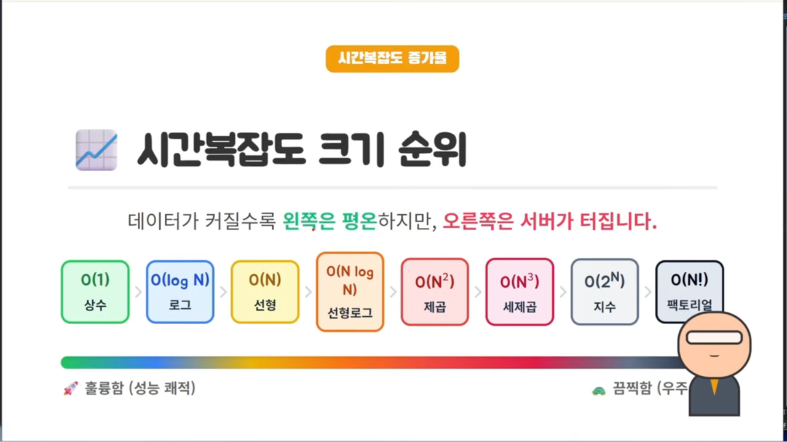
그래프로 보면 차이가 더 확실해요. 아래 깔린 초록 선 O(1)과 파란 선 O(log N)은 데이터가 커져도 거의 평평하고, 왼쪽으로 치솟는 선들이 O(N²) 이상이에요.
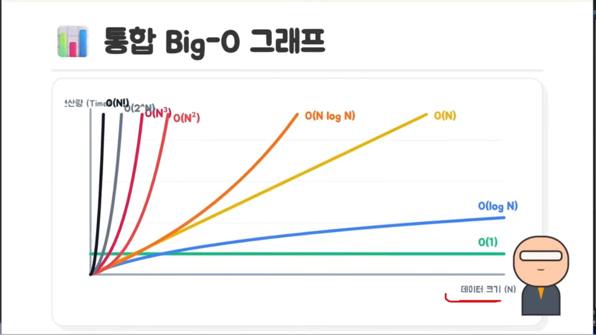
복잡도별 예시를 한 표에 모은 슬라이드도 있어요. 정렬(퀵·병합·힙)은 O(N log N), 부분 집합 구하기와 재귀 피보나치는 O(2ᴺ)이라 N이 40만 넘어도 수조 번, 모든 순열 구하기는 O(N!)이라 N이 15만 넘어도 사실상 계산이 안 돼요.
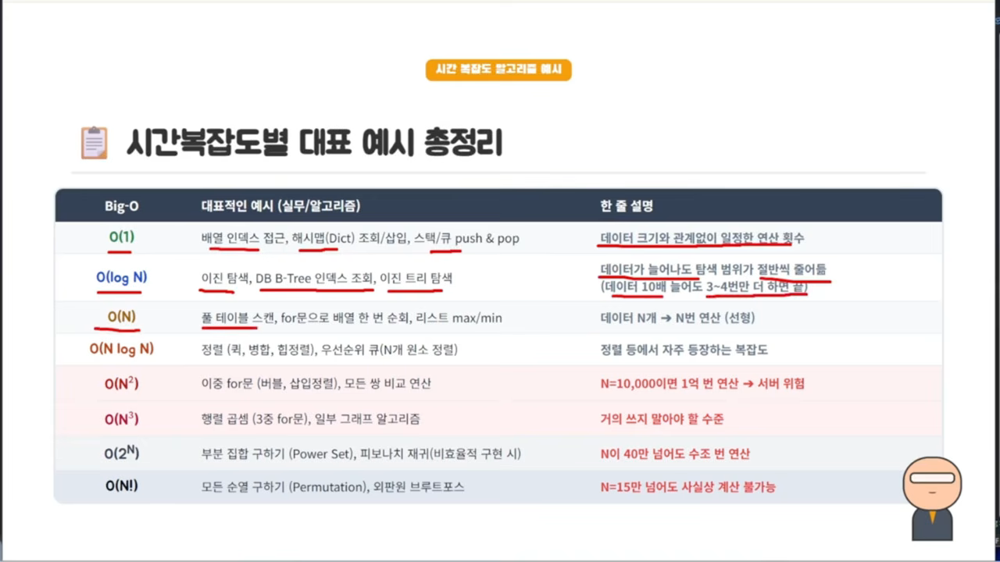
O(1)이 늘 빠른 건 아니에요
알고리즘 문제에서는 O(1)이 무조건 이기지만, 실무에서는 어디서 어떻게 연산하느냐가 성능을 좌우해요. 로컬 메모리에서 파이썬 리스트를 도는 O(N)이 원격 Redis의 O(1) GET보다 빠를 수 있어요. 오른쪽 칸의 네트워크 I/O, 디스크 I/O, 캐시 미스가 그 이유예요.
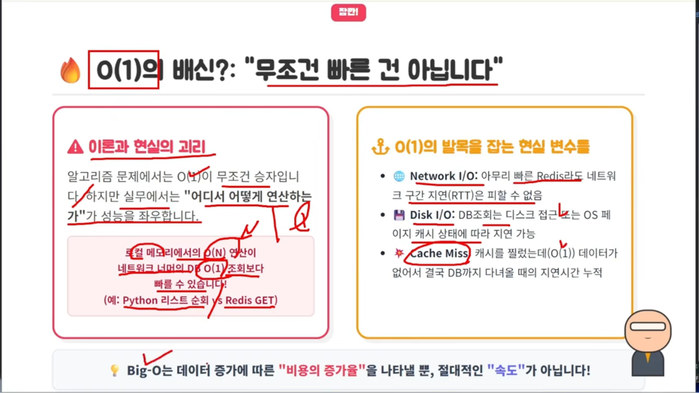
실무에서는 어디까지 허용될까요
위 칸은 일반적인 기준이에요. 실시간 API는 O(N log N)을 마지노선으로 보고, 유저나 게시글처럼 끝없이 느는 데이터에서 O(N²) 이상은 코드 리뷰에서 시한폭탄으로 걸러져요. 아래 왼쪽 칸은 예외예요. N이 10~50건으로 작게 고정되면 이중 for문이 오히려 읽기 쉬워서 나아요. 야간 배치도 조금 관대해요. 아래 오른쪽 칸은 우회법이에요. 로직상 O(N²)을 피할 수 없으면 10만 건을 한 번에 돌리지 말고 페이징으로 100건씩 나눠 N 자체를 줄여요.
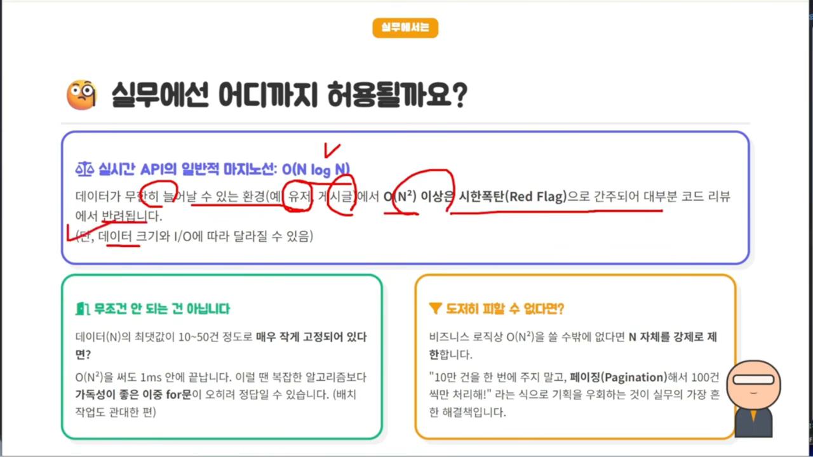
동기와 비동기는 무엇을 맞출까요?
"동기는 같을 동이니까 같이 하는 거고, 비동기는 따로 하는 거 아닌가요?" 발표자가 꼽은 탈락 답변이에요. '동시'라는 어감 때문에 헷갈리지만 프로그래밍에서는 정반대 뜻이에요.
어원부터 풀기
왼쪽 칸을 보면 동기(同期)는 같을 동에 시기 기를 써요. 영어 Sync도 Syn(함께)과 Chrono(시간)에서 왔어요. 맞추는 시간은 앞 작업이 끝나는 시간과 뒤 작업이 시작하는 시간이에요. 즉 앞이 끝나야 뒤가 시작해요. 오른쪽 비동기는 거기에 아닐 비(非)가 붙어서, 시간을 맞추지 않겠다는 뜻이에요. 작업이 언제 끝나든 나는 내 길을 가요.
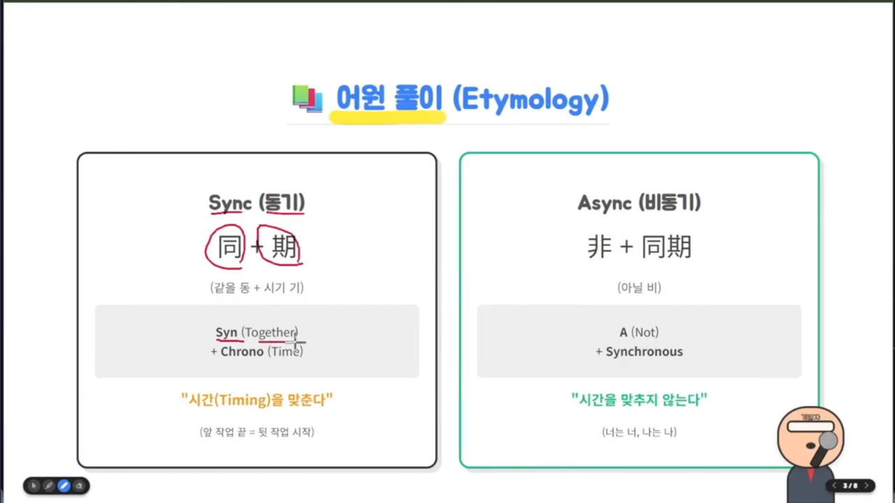
카페 주문 비유
왼쪽 동기는 줄 서서 기다리는 카페예요. 앞사람이 주문하고 커피를 받을 때까지 뒷사람은 멍하니 기다려야 해요. 이 상태를 블로킹이라고 해요. 오른쪽 비동기는 진동벨이에요. 주문하고 자리로 돌아가 다른 일을 하다가 벨이 울리면 커피를 받으러 가요. 이 벨이 콜백이에요.
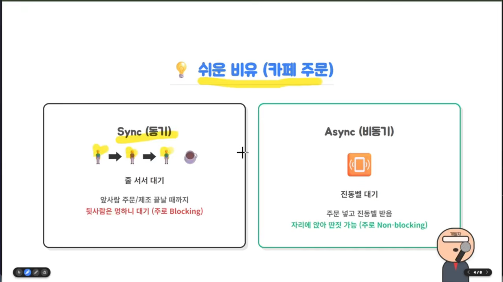
타임라인으로 보면 위 줄의 동기는 A 요청을 보내고 노란 대기 구간 동안 아무것도 못 한 뒤에야 B 작업을 시작해요. 아래 줄의 비동기는 A 요청을 보내자마자 B 작업을 하고, A가 끝났다는 콜백이 오면 A의 나머지를 처리해요. 빈틈없이 꽉 채워 일하니 대부분 더 효율적이에요.
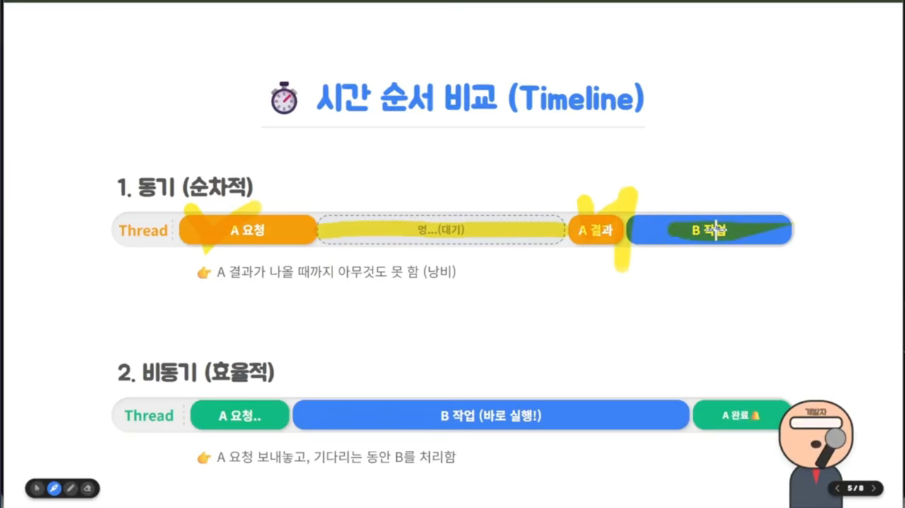
왜 비동기를 쓸까요
위 노란 칸이 핵심이에요. 디스크·DB·네트워크 같은 I/O 작업은 느리고 CPU는 빨라요. 느린 작업을 기다리느라 비싼 CPU를 놀리지 않으려고 비동기를 써요. 왼쪽 서버 관점에서는 DB에서 데이터를 찾는 동안 다른 사용자 요청을 처리하고, 오른쪽 UI(User Interface) 관점에서는 서버 응답을 기다리는 동안에도 화면이 얼지 않고 스크롤과 클릭이 돼요. 자바스크립트 같은 단일 쓰레드 환경에서는 필수예요.
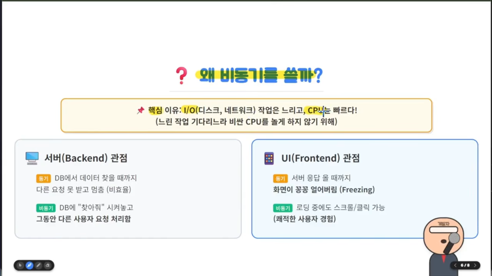
면접 모범 답안은 세 문장이에요. 동기는 요청 후 결과가 나올 때까지 기다렸다가 다음 작업을 진행해요. 비동기는 결과를 기다리지 않고 완료 시점에 콜백 등으로 결과를 처리해요. 비동기는 주로 시간이 오래 걸리는 I/O 작업의 효율을 위해 써요. 꼬리 질문으로는 블로킹과 동기가 같은 개념인지, 싱글 쓰레드인 자바스크립트가 어떻게 비동기를 처리하는지, 비동기를 동기처럼 쓰게 해 주는 문법은 무엇인지, 비동기가 오히려 나쁜 경우는 언제인지가 나와요.
동시성은 구조, 병렬성은 실행
"둘 다 동시에 실행하는 거 아닌가요?"라고 답하면 감점이에요. 발표자는 이 영상의 결론을 처음부터 밝혀요. 동시성은 구조이고, 병렬성은 실행이에요.
요리사 비유
왼쪽 동시성은 요리사가 한 명이에요. 양파를 썰다가 물을 끓이다가 다시 파를 썰며 빠르게 번갈아 일해요. 밖에서 보면 요리 여러 개가 동시에 진행되는 것처럼 보여요. 오른쪽 병렬성은 요리사가 진짜 두 명이고 불도 두 개예요. 한 명은 양파를 썰고 한 명은 굽는, 물리적으로 동시에 일어나는 일이에요.
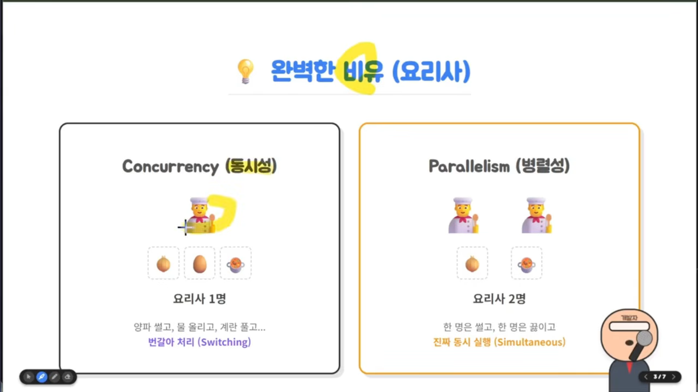
CPU 코어로 보면
왼쪽 싱글 코어 막대는 보라와 주황이 잘게 번갈아 있어요. 코어 하나가 태스크 A와 B를 아주 짧은 시간 단위로 쪼개 번갈아 실행하는 타임 슬라이싱이에요. 오른쪽 멀티 코어는 Core 1이 Task A를, Core 2가 Task B를 같은 시간대에 실행해요. 병렬성은 하드웨어 지원이 필수예요.
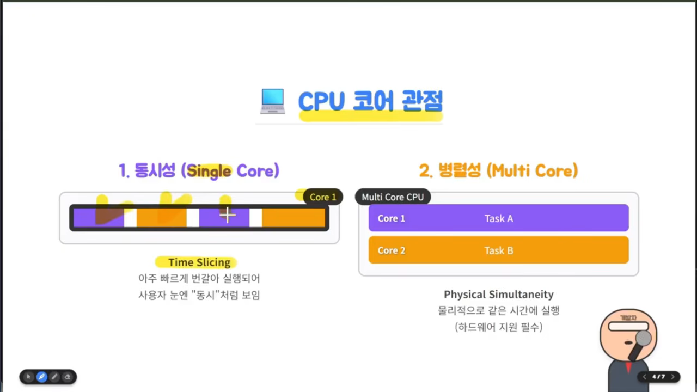
헷갈리는 지점을 표로
발표자가 "오늘의 핵심"이라 한 표예요. 두 번째 줄 '싱글 코어'에서 갈려요. 동시성은 하나의 코어가 빠르게 번갈아 처리해 사용자에게 동시처럼 보이게 만들 수 있으니 가능하고, 병렬성은 코어가 최소 두 개 있어야 하니 불가능해요.
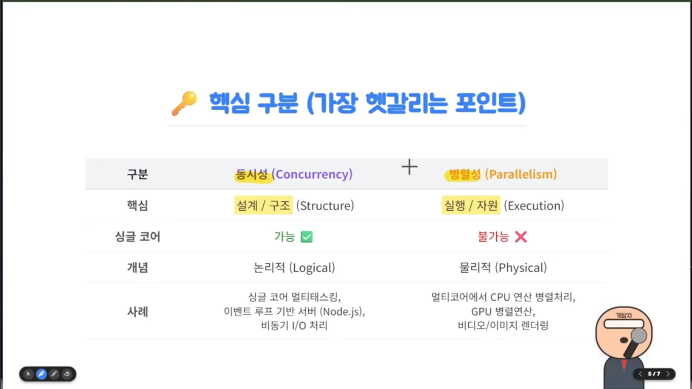
| 구분 | 동시성(Concurrency) | 병렬성(Parallelism) |
|---|---|---|
| 핵심 | 설계·구조 | 실행·자원 |
| 싱글 코어 | 가능 | 불가능 |
| 개념 | 논리적 | 물리적 |
| 사례 | 싱글 코어 멀티태스킹, Node.js 이벤트 루프 서버, 비동기 I/O | 멀티코어 CPU 병렬 연산, GPU 연산, 영상·이미지 렌더링 |
꼬리 질문은 세 가지예요. 싱글 코어에서 동시성이 왜 필요한지, 병렬성이 무조건 빠른지, 파이썬은 멀티코어에서도 쓰레드가 병렬로 안 돈다던데 왜 그런지예요.
레이턴시와 스루풋
"처리량이 높으면 레이턴시도 낮아지는 거 아닌가요? 둘 다 성능이잖아요." 정말 흔한 착각이에요. 레이턴시는 속도(시간), 스루풋은 양(볼륨)이라 완전히 다른 축이에요.
고속도로 비유
왼쪽 레이턴시는 차 한 대가 서울에서 부산까지 얼마나 빨리 도착하느냐예요. 오른쪽 스루풋은 한 시간 동안 고속도로를 몇 대가 통과했느냐예요. 빨리 처리하는 것과 많이 처리하는 것은 서로 독립적이에요.
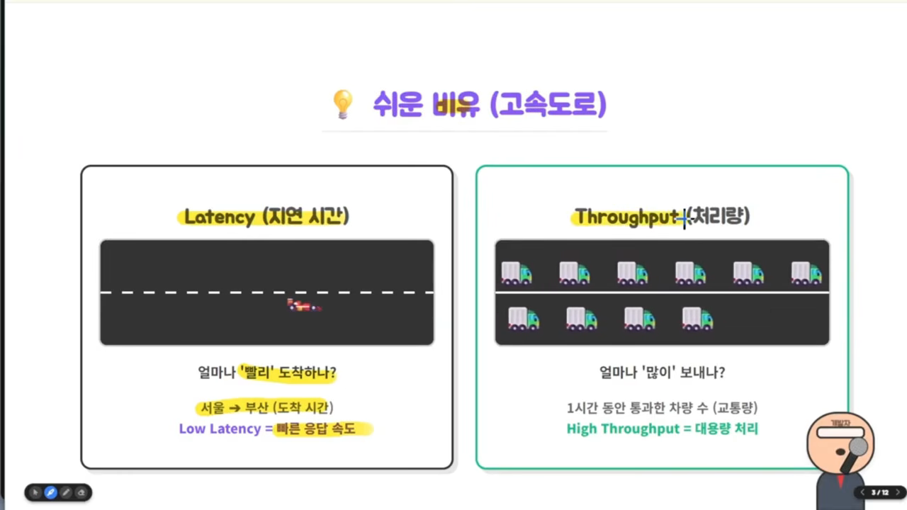
기술적으로 보면 레이턴시는 단일 요청 관점이에요. 요청 하나에 걸리는 시간이고 단위는 보통 ms, 낮을수록 좋은 사용자 체감 지표예요. 스루풋은 시스템 전체 관점이에요. 단위 시간당 처리할 수 있는 양이고 TPS(Transactions Per Second), RPS(Requests Per Second), 네트워크에서는 Mbps를 써요. 높을수록 좋고 서버의 스펙과 처리 능력을 나타내요.
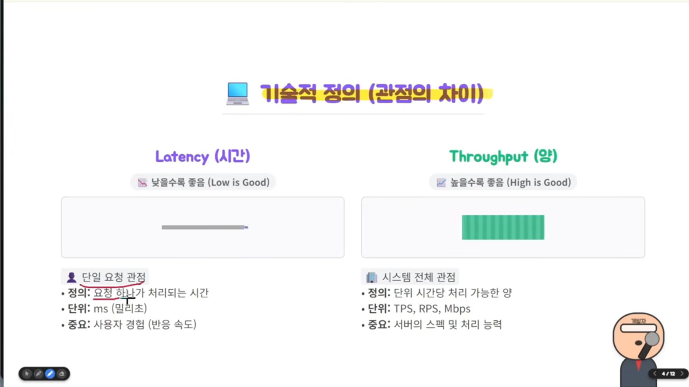
두 지표는 독립적이에요
빠른 시스템과 많이 처리하는 시스템은 다를 수 있어요. 왼쪽 싱글 쓰레드 API는 하나는 빨리 처리하지만 한 번에 한 명만 받아서 처리량이 낮아요(비동기는 고려하지 않은 경우예요). 오른쪽 대용량 배치는 결과는 내일 나와도 하루 수억 건을 처리해요.
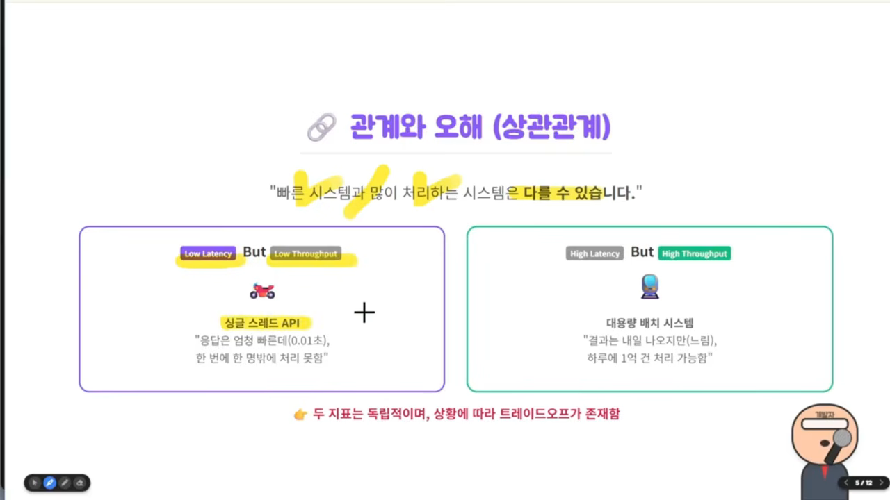
그럼 언제 무엇이 목표일까요. 왼쪽처럼 웹 서비스, 모바일 앱, 검색·결제·로그인처럼 사람이 기다리는 일은 레이턴시가 1순위예요. 지표는 P50, P95, P99 레이턴시예요. 사용자는 가끔 느린 것에도 민감해요. 오른쪽처럼 로그 수집, 스트리밍, 대용량 배치, 메시지 큐는 스루풋이 1순위이고, 지표는 TPS와 RPS예요. 한 건이 조금 느려도 전체가 밀리지 않으면 괜찮아요.
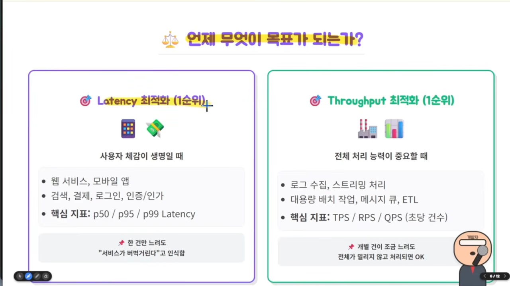
줄이는 전략, 높이는 전략
레이턴시를 줄이는 전략은 세 가지예요. 캐시와 CDN(Content Delivery Network)으로 물리적 거리와 반복 연산을 줄이고, 알고리즘을 개선하고, 프로토콜과 커넥션 풀링으로 통신 오버헤드를 줄여요.
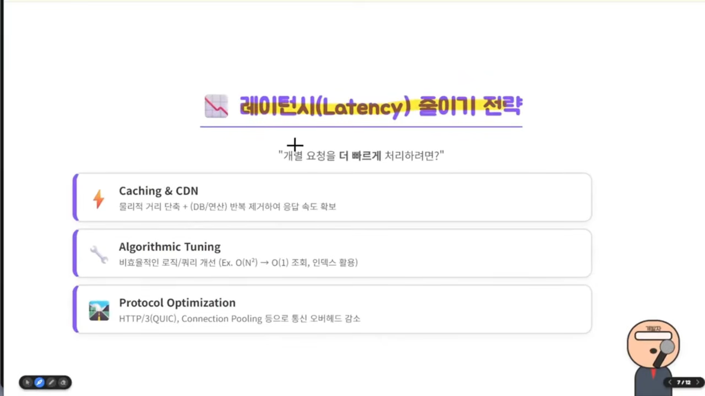
스루풋을 높이는 전략도 세 가지예요. 서버 대수를 늘리는 스케일 아웃, I/O 대기 시간을 활용하는 비동기·논블로킹, 요청을 모아 처리하는 배치와 큐예요. 가운데 줄에 적혀 있듯 CPU 바운드 작업은 비동기보다 병렬·분산 처리가 더 효과적이에요.
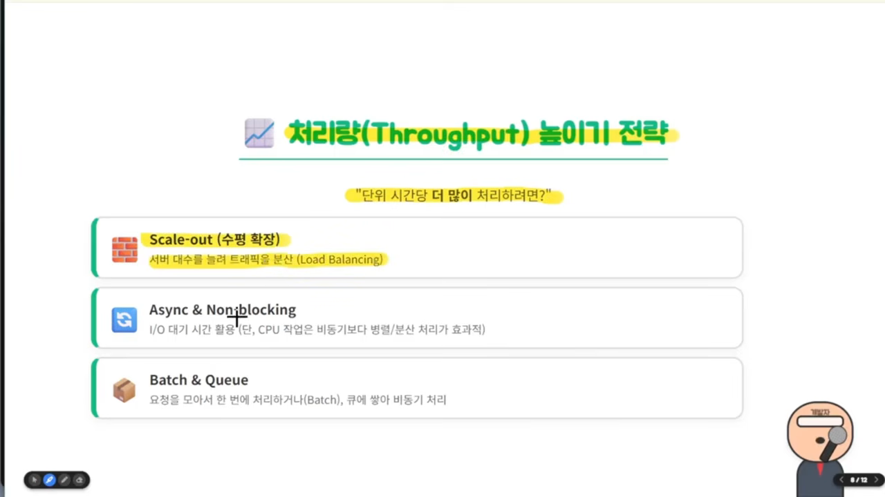
니 포인트와 실무 순서
발표자가 중요하다고 강조한 그래프예요. 가로축은 TPS, 세로축은 레이턴시예요. TPS가 올라가도 한동안 레이턴시는 바닥에 붙어 있다가, 빨간 점부터 갑자기 치솟아요. 사람 무릎처럼 꺾인다고 해서 니 포인트라고 불러요. 이 지점을 넘으면 요청이 큐에 쌓이고 레이턴시가 기하급수적으로 늘어요.
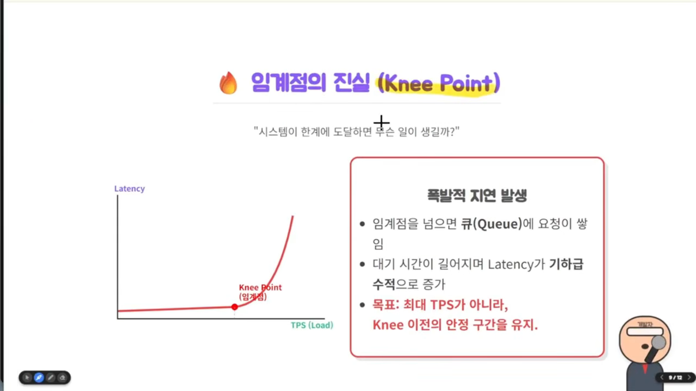
그래서 실무에는 순서가 있어요. 1단계로 왼쪽 칸처럼 "P95 200ms 이하" 같은 레이턴시 상한(SLA(Service Level Agreement))을 먼저 정해요. 사용자가 참을 수 있는 마지노선이에요. 2단계로 그 조건을 깨지 않는 범위에서 스케일 아웃, 캐시, 비동기로 스루풋을 최대한 늘려요. 이 순서가 바뀌면 안 돼요.
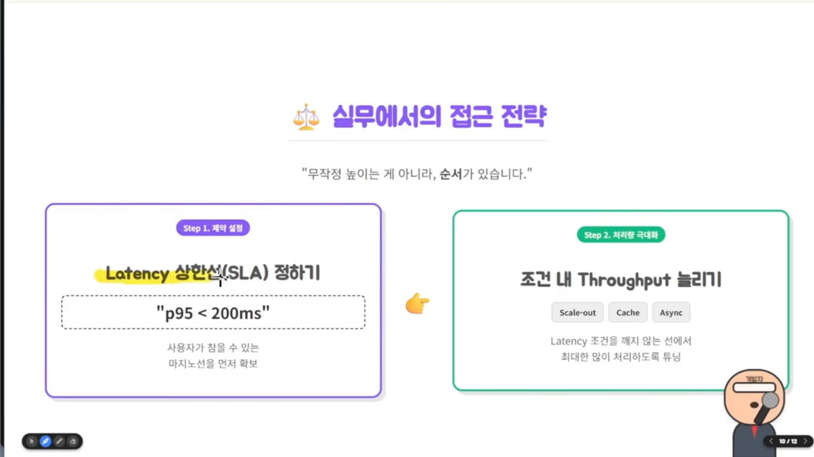
일반화와 추상화
"추상화는 abstract 키워드 쓰는 거고, 일반화는 상속할 때 쓰는 거 아닌가요?" 틀린 말은 아니지만 문법 얘기에 그쳐요. 발표자는 설계의 방향과 목적으로 답하라고 해요.
일반화: 공통점을 뽑아라
일반화는 여러 구체적인 것에서 공통점을 뽑아 상위 개념을 만드는 거예요. 오른쪽 칸처럼 동그라미, 네모, 세모는 모두 넓이와 둘레를 구할 수 있으니 '도형'으로 묶어요. 객체지향에서는 공통 속성을 뽑아 상위 클래스를 만드는 일이에요.
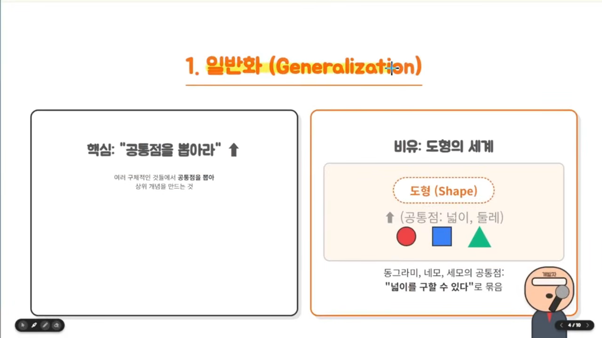
추상화: 핵심만 남겨라
추상화는 복잡한 것에서 핵심만 남기고 나머지는 숨기는 거예요. 오른쪽 자동차 운전 비유처럼, 운전자에게는 브레이크와 가속 페달만 보여 주고 엔진 원리는 숨겨요. 아래 줄의 Plus도 같은 얘기예요. 온라인 강의 시스템의 학생 객체에는 학번과 이름만 있으면 되고 키나 혈액형은 필요 없어요.
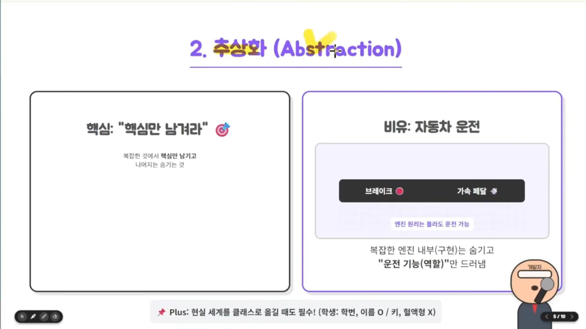
생각의 방향으로 비교하면, 왼쪽 일반화는 개별 요소를 공통점으로 묶는 그루핑이고, 오른쪽 추상화는 내부의 배선과 톱니바퀴를 숨기고 단순한 버튼만 주는 단순화예요.
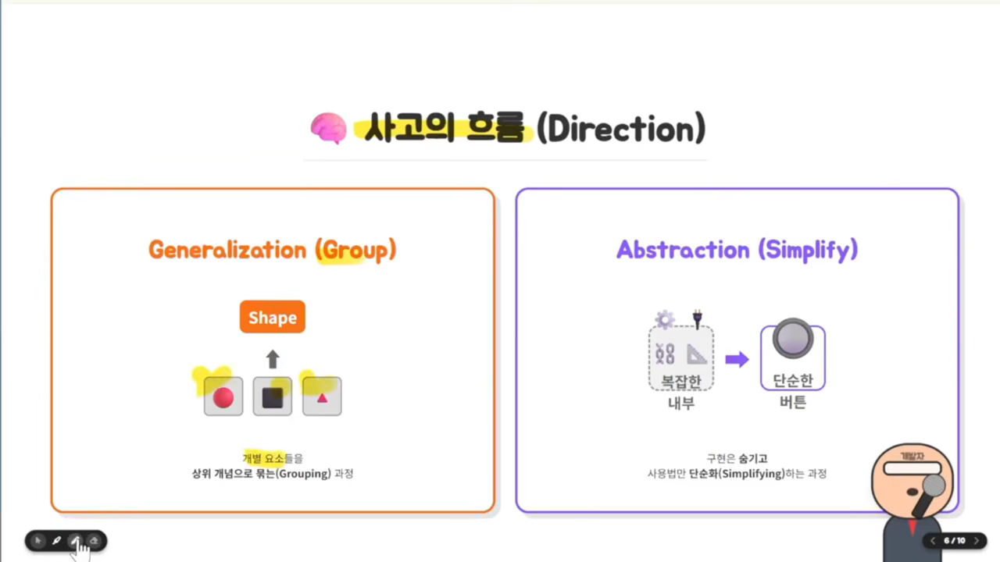
코드와 표로 정리
파이썬 코드로 보면 왼쪽 일반화는 Circle(Shape)처럼 상속이에요. 오른쪽 추상화는 ABC와 @abstractmethod로 pay()만 드러내는 인터페이스예요. 카드인지 현금인지, 외부 결제 시스템과 어떻게 붙는지는 숨겨서 연동하는 개발자는 pay()만 알면 돼요.
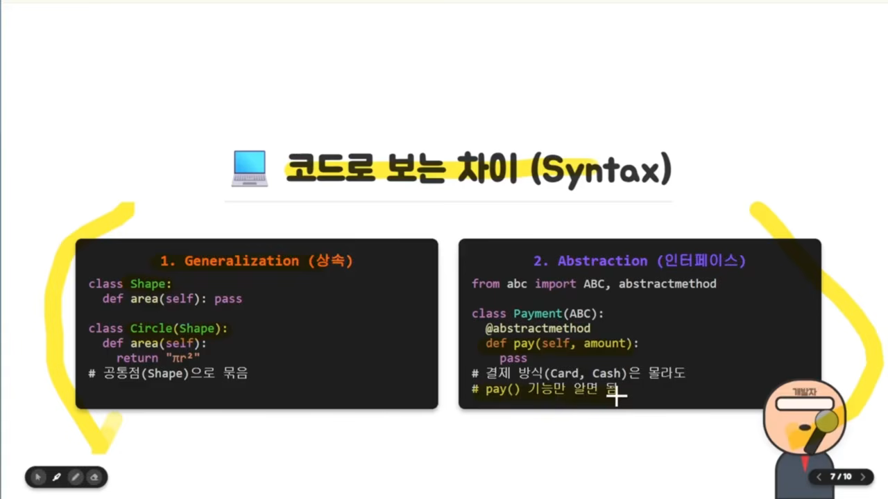
한눈에 비교한 표예요. 방향이 정반대인 게 눈에 띄어요. 일반화는 구체적인 것에서 일반적인 것으로(Bottom-Up), 추상화는 상세한 것에서 핵심으로(Top-Down) 가요. 반대말도 각각 특수화와 구체화예요.
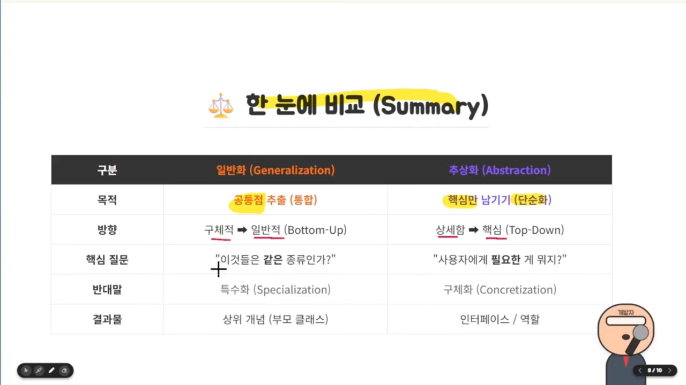
둘은 경쟁 관계가 아니라 같은 설계 흐름 위에 있어요. 개·고양이·소 같은 구체적인 구현체를 일반화로 상위 개념에 묶고, 그 개념에서 다시 추상화로 필요한 기능만 노출해요. 모범 답안의 마지막 문장도 이거예요. 객체지향 설계에서는 일반화로 개념을 정리하고, 추상화로 의존성을 줄여요.
멱등성 키로 중복 결제 막기
결제 버튼을 사용자가 '따닥' 두 번 누르면 어떻게 될까요. 결제가 두 번 되면 안 돼요. 이때 필요한 개념이 멱등성이고, 이를 구현하는 장치가 멱등성 키예요.
중복 요청은 의도하지 않아도 생겨요
세 칸이 중복 요청이 생기는 경로예요. 사용자가 실수로 두 번 클릭할 수 있고, 네트워크 오류로 판단한 클라이언트가 자동 재전송할 수 있고, 누군가 고의로 연타할 수도 있어요.
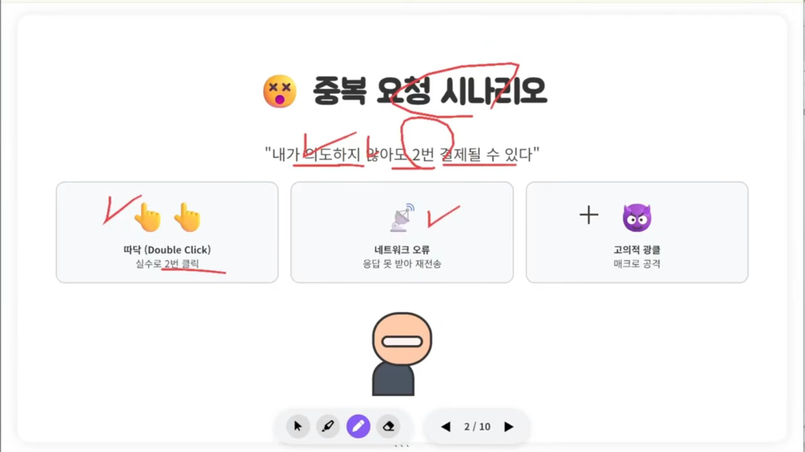
발표자는 늘 그렇듯 계층별로 방어를 나눠요. 프론트에서는 버튼 비활성화, 로딩 스피너, 요청 중 플래그를 써요. DB에서는 유니크 제약을 걸어요. 하지만 각 줄 오른쪽에 적힌 한계처럼 프론트는 새로고침과 자동 재전송을 못 막고, DB는 외부 API 호출을 못 막아요. 그래서 가운데 API 서버가 핵심이에요.
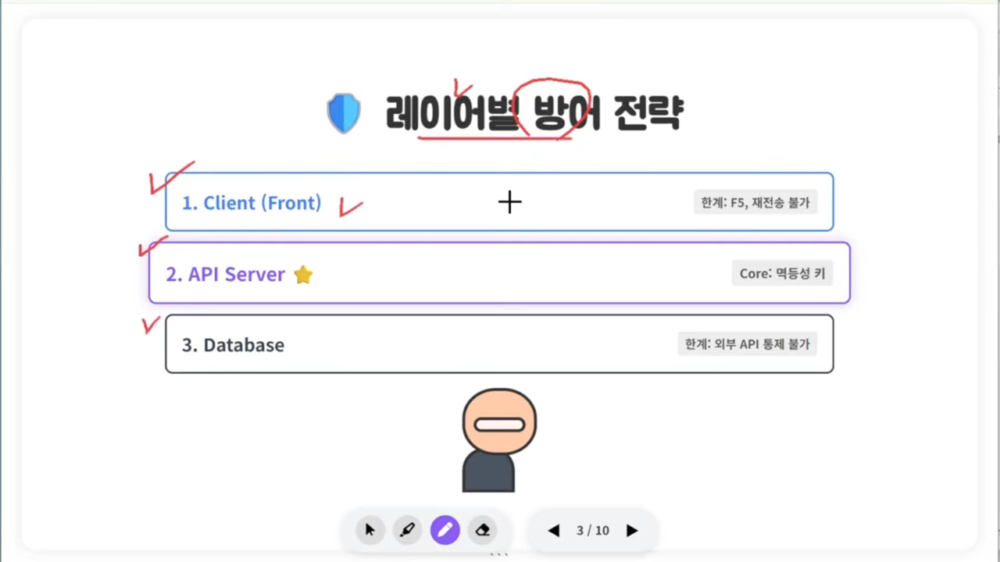
DB 유니크 키만으로 부족한 이유를 그림으로 보여 줘요. API 서버가 가운데 PG(Payment Gateway)사에 결제를 요청하고 오른쪽 DB에 저장해요. DB에서 두 번째 저장은 막혀도, PG사에는 이미 두 번 요청이 들어갔어요. 결과는 DB에서 막았지만 돈은 두 번 나가요.
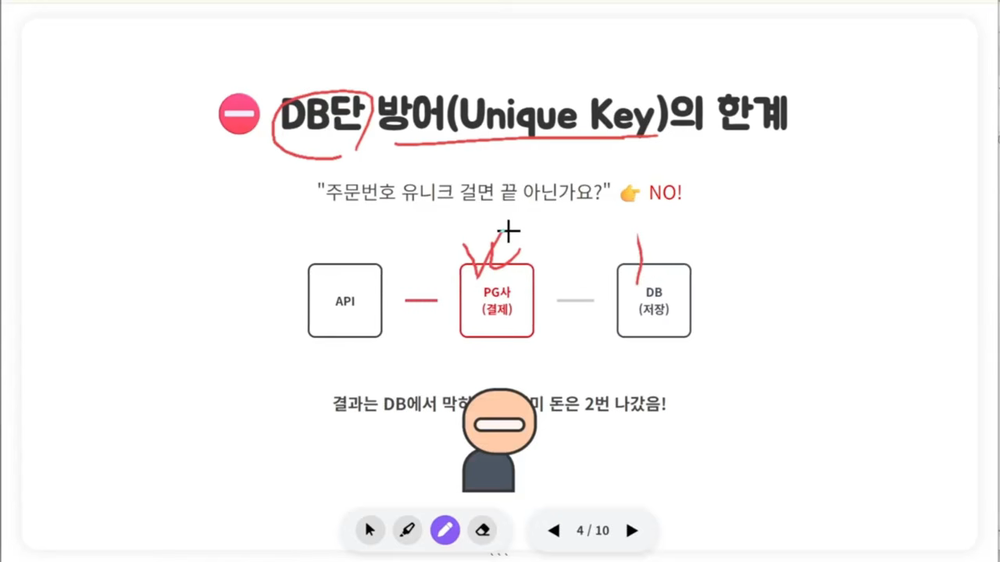
멱등성 키 아키텍처
멱등성(Idempotency)은 f(x) = f(f(x))처럼 한 번 하든 여러 번 하든 결과가 같은 성질이에요. 엘리베이터 버튼을 100번 눌러도 엘리베이터는 한 번 와요. 아래 화면에서 왼쪽 Client가 키를 만들어 헤더 Idempotency-Key에 실어 보내고, 가운데 Server가 오른쪽 Redis에 키가 있는지 확인해요.
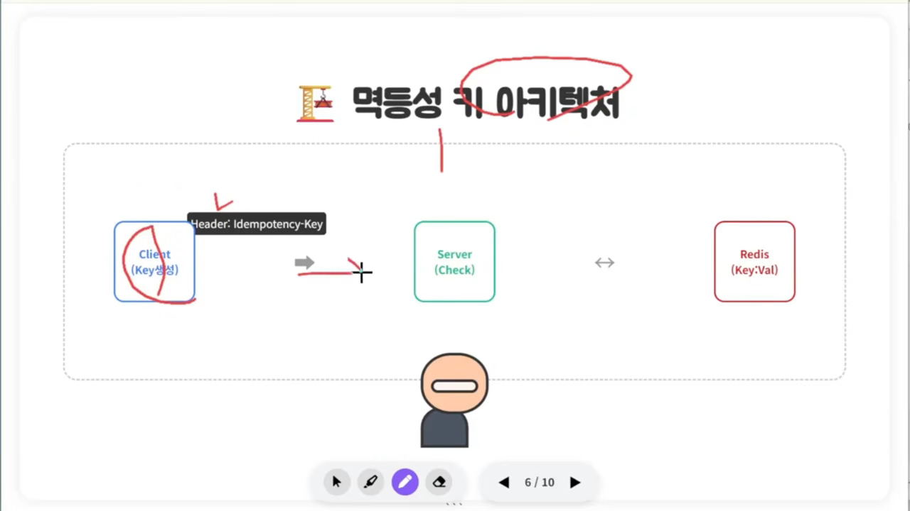
서버 로직은 두 갈래예요. 아래 그림은 같은 키로 요청이 두 번 왔을 때의 흐름이에요.
sequenceDiagram participant C as 클라이언트 participant S as API 서버 participant R as Redis participant P as PG사 C->>S: 결제 요청 (Idempotency-Key: abc) S->>R: abc 있나요? R-->>S: 없음 (Miss) S->>P: 결제 실행 P-->>S: 성공 S->>R: abc = 성공 결과 저장 S-->>C: 성공 C->>S: 같은 요청 재전송 (Idempotency-Key: abc) S->>R: abc 있나요? R-->>S: 있음 (Hit) + 저장된 결과 S-->>C: 저장된 성공 결과 반환
슬라이드에서는 같은 흐름을 두 칸으로 정리해요. 왼쪽 Case 1(처음 온 키)은 Redis Miss, 결제 실행, 결과 저장, 응답 순서예요. 오른쪽 Case 2(중복 키)는 Redis Hit, 로직 실행 안 함, 저장된 결과 반환이고, 마지막 줄에 '돈은 1번만 나감'이라고 적혀 있어요.
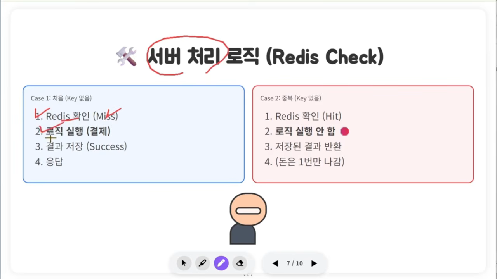
주의할 두 가지
위 초록 칸은 키를 언제 바꾸느냐예요. 같은 키를 계속 보내면 같은 주문으로 보니, 사용자가 장바구니를 바꾸거나 새 주문을 할 때처럼 의도가 바뀌면 새로 만들어요. 즉 클라이언트의 의도 단위가 키의 변경 단위예요. 아래 주황 칸은 저장한 키를 언제 지우느냐예요. 보통 24~48시간이면 실수 클릭이나 재전송을 처리하기에 충분해요.
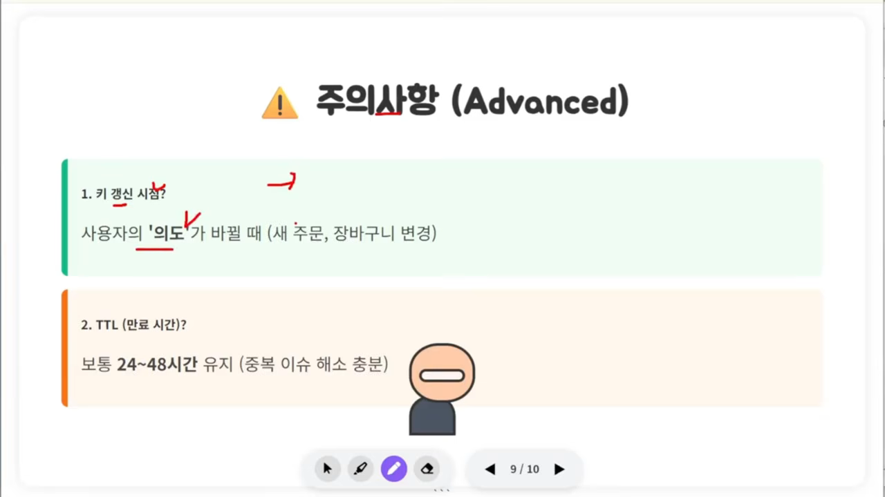
INT 오버플로와 정수 자료형 고르기
싸이의 강남스타일 사건으로 데이터베이스 정수 자료형을 짚는 영상이에요. 타임라인 슬라이드를 위에서부터 읽으면 2012년 7월 뮤직비디오 업로드, 2014년 6월 유튜브 사상 처음 20억 뷰 돌파, 2014년 12월 조회수 2,147,483,647 도달이에요. 마지막 숫자가 32비트 INT의 최댓값과 정확히 같아요.
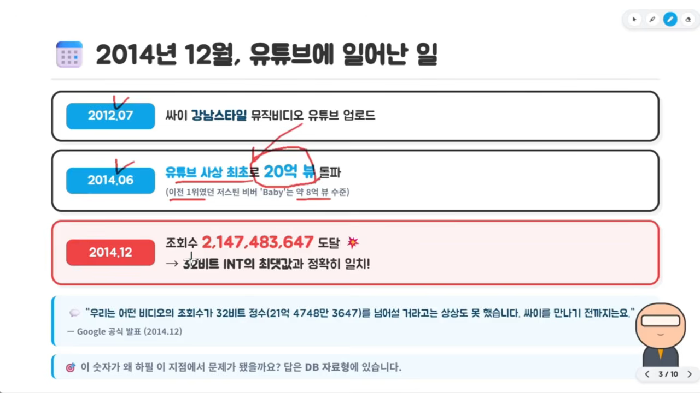
정수 오버플로의 원리
32비트 정수는 맨 앞 1비트를 부호로 쓰고 나머지 31비트로 수를 표현해요. 그래서 양수의 최댓값은 2³¹−1 = 2,147,483,647이에요. 가운데 줄처럼 최댓값은 부호 비트 0 뒤에 1이 31개 붙은 모양이에요. 여기에 1을 더하면 올림이 끝까지 번져 부호 비트가 1로 바뀌고, 아래 빨간 줄처럼 컴퓨터는 이를 가장 작은 음수 −2,147,483,648로 읽어요. 이게 정수 오버플로예요.
다만 위 노란 칸에 적혀 있듯 '음수로 뒤집힘'은 주로 C나 Java 같은 언어의 동작이에요. DB는 PostgreSQL, Oracle, SQL(Structured Query Language) Server, MySQL strict 모드 모두 대부분 에러로 저장을 거부해요.
MySQL 정수 자료형 다섯 가지
표의 노란 두 줄이 가장 많이 쓰는 INT와 BIGINT예요. INT는 4바이트로 약 ±21억, BIGINT는 8바이트로 약 ±922경이에요. 오른쪽 열의 UNSIGNED는 부호 비트를 쓰지 않아 양수 범위가 두 배가 돼요. 단 아래 설명처럼 UNSIGNED는 표준 SQL이 아니라 MySQL 확장이라, PostgreSQL·Oracle·SQL Server로 옮길 때 주의해야 해요.
INT가 4바이트라 21억이 한계라는 점이 강남스타일 사건의 숫자와 그대로 맞아요. 영상 01:10:12에서 보기| 타입 | 크기 | Signed 범위 | Unsigned 범위 |
|---|---|---|---|
TINYINT | 1바이트 | −128 ~ 127 | 0 ~ 255 |
SMALLINT | 2바이트 | −32,768 ~ 32,767 | 0 ~ 65,535 |
MEDIUMINT | 3바이트 | 약 ±838만 | 0 ~ 약 1,677만 |
INT | 4바이트 | 약 ±21억 (최댓값 2,147,483,647) | 0 ~ 약 42억 |
BIGINT | 8바이트 | 약 ±922경 | 0 ~ 약 1,844경 |
INT와 BIGINT를 실감해 보는 슬라이드도 있어요. 왼쪽 INT의 21억은 한국 인구의 약 40배라 사용자 엔티티에는 충분하지만, 대용량 로그와 이벤트에는 모자랄 수 있어요. 오른쪽 BIGINT는 1초에 1억씩 더해도 약 2,900억 년이 걸리는 사실상 무한대예요. 대신 4바이트가 더 들어요. 아래 칸은 자주 헷갈리는 INT(11)이에요. 11은 저장 크기가 아니라 출력 자릿수 힌트인 표시 폭이고, ZEROFILL과 함께 쓰면 빈 자리를 0으로 채웠어요. 지금은 권장하지 않아요.
INT(5)든 INT(11)이든 똑같이 4바이트, 최대 21억이에요. 영상 01:11:52에서 보기어떤 컬럼에 BIGINT가 필요할까요
빨간 네 칸이 위험한 경우예요. 사용자 행동·API 호출·결제 트랜잭션 로그는 하루 1억 건이면 21일 만에 INT가 바닥나요. 대형 커뮤니티나 SNS(Social Networking Service)의 게시물 ID, 카톡·슬랙 같은 메신저의 메시지 ID, 좋아요·댓글·팔로우 알림 ID도 사용자 행동마다 N배로 늘어서 빨리 소진돼요.
반대로 초록 세 칸은 INT로 충분해요. 사용자 ID는 국민 메신저급이 아니면 21억 명에 닿지 않고, 상품 ID는 보통 수백~수천만 단위이고, 카테고리나 코드 ID는 SMALLINT로도 충분할 때가 많아요. 아래 판단 원칙대로 '사람·엔티티'를 가리키면 INT, '이벤트·로그·메시지'를 가리키면 BIGINT를 고려해요.
실무 가이드도 세 가지예요. 하루 증가량이 수백만 건이면 처음부터 BIGINT로 가요. 4바이트 추가 비용은 1억 행에 약 400MB라 운영 위험에 비하면 합리적이에요. MySQL만 쓴다면 음수 없는 ID에 UNSIGNED를 써도 되지만, 다른 DB나 ORM(Object-Relational Mapping)과의 호환이 걱정되면 표준인 SIGNED로 통일해요. "나중에 ALTER로 바꾸면 되지"는 위험해요. 운영 중인 1억 행 테이블을 INT에서 BIGINT로 바꾸면 테이블 락, 롱 트랜잭션, 서비스 지연이 생길 수 있어요.
티어와 레이어
3-tier, OSI(Open Systems Interconnection) 7 레이어, 레이어드 아키텍처처럼 티어와 레이어는 둘 다 '층'이라는 뜻이라 섞어 쓰기 쉬워요. 발표자는 물리냐 논리냐로 나눠요.
티어는 물리, 레이어는 논리
티어는 소프트웨어 시스템을 이루는 물리적으로 분리된 실행 계층이에요. 아래 Client, Server, DB처럼 서로 다른 서버나 프로세스에서 돌고 네트워크로 통신해요. 흔히 쓰는 '탑티어'의 그 티어예요.
레이어는 소프트웨어 안을 역할과 책임에 따라 논리적으로 나눈 구조예요. 아래처럼 Presentation(Controller), Business(Service), Data Access(Repository)가 같은 프로그램 안에서 함수 호출로 이어져요. 스프링에서 흔히 보는 구조예요.
비교표로 보면 관점, 위치, 통신, 예시 네 줄이 모두 갈려요. 다만 아래 메모처럼 학계나 업계에서 두 말을 섞어 쓰는 경우가 더 많아서, 완전히 정립된 구분은 아니에요.
2-tier에서 N-tier까지
1990년대부터 2000년대 초까지는 2-tier, 이른바 팻 클라이언트 시대였어요. 오른쪽 '대표 기술'의 Visual Basic, Delphi, PowerBuilder, C++ Builder로 만든 설치형 프로그램이 DB에 바로 붙었어요. 클라이언트가 DB에 직접 접속하니 보안이 약했고, 업무 로직이 클라이언트에 있어서 조금만 바뀌어도 다시 배포해야 했고, 확장성도 나빴어요.
그래서 1990년대 후반부터 3-tier가 나왔어요. 클라이언트와 DB 사이에 애플리케이션 서버가 들어가 업무 로직, DB 커넥션 풀, 트랜잭션, 보안 경계를 맡아요. 아래 칸처럼 C/S 기반에서는 Tuxedo, CORBA(Common Object Request Broker Architecture), COM(Component Object Model)+, 초기 EJB(Enterprise JavaBeans)가, 웹 기반에서는 WebLogic과 WebSphere 같은 WAS(Web Application Server)가 쓰였어요.
웹과 모바일 시대에는 구조가 다시 바뀌어요. 위에서부터 읽으면 2000년대 초 브라우저가 클라이언트가 되며 팻 클라이언트가 사라지기 시작했고, ActiveX·Flash·Applet의 RIA(Rich Internet Application) 시대에 브라우저가 다시 무거워졌다가, 2010년대 HTML5(HyperText Markup Language 5) 표준화와 ActiveX 퇴출로 브라우저가 진짜 씬 클라이언트가 됐어요. 지금은 REST(Representational State Transfer) API와 GraphQL이 프론트와 백엔드 경계의 표준이에요.
오늘날의 구조는 N-tier예요. 클라이언트와 DB 사이에 API 서버가 있고, 그 사이에 캐시나 메시지 큐가 더 끼기도 해요. 오른쪽 아래 메모처럼 티어가 늘수록 유연성도 복잡성도 함께 늘어서, 적절한 수준이 중요해요.
Supabase는 2-tier일까요
React에서 Supabase로 바로 쿼리하는 코드는 브라우저가 DB에 직접 붙는 것처럼 보여요. 하지만 오른쪽 '실제 구조'처럼 그 사이에 Supabase API 서버가 있고, 쿼리 같은 문법도 내부에서 HTTP(HyperText Transfer Protocol) REST 요청으로 바뀌어요. 그래서 여전히 3-tier예요.
영상은 생각해 볼 질문 세 개로 끝나요. MSA는 몇 tier인지, Firebase나 Supabase 같은 BaaS를 쓰면 백엔드 개발자가 필요 없는지, CORBA와 DCOM(Distributed Component Object Model)은 사라지고 REST API가 살아남은 이유는 무엇인지예요.
인터넷과 웹, 그리고 웹의 탄생
"웹의 상식" 두 편을 묶었어요. 앞 편은 인터넷과 웹의 차이, 뒤 편은 웹을 누가 왜 만들었는지예요.
인터넷과 웹은 달라요
퀴즈 두 개로 시작해요. 왼쪽 Q1, 인터넷이 끊기면 웹사이트에 들어갈 수 있을까요? 당연히 못 들어가요. 오른쪽 Q2, 웹 브라우저가 없으면 인터넷을 못 쓸까요? 여기서 많이 헷갈리는데, 쓸 수 있어요. 둘은 다른 개념이라는 뜻이에요.
인터넷은 고속도로예요. 해저 케이블, 라우터, IP(Internet Protocol) 주소로 전 세계 컴퓨터를 물리적으로 이어 놓은 망이고, 서비스가 아니라 기반 시설이에요.
웹은 그 도로 위를 달리는 택배 트럭이에요. HTML(HyperText Markup Language) 문서를 싣고 날라요. 왼쪽 아래 목록처럼 같은 도로에는 이메일(SMTP(Simple Mail Transfer Protocol)), 파일 전송(FTP(File Transfer Protocol)), 온라인 게임(UDP(User Datagram Protocol)/TCP) 트럭도 달려요. 웹은 인터넷 위에 올라간 수많은 서비스 중 하나예요.
웹이 생기기 전에도 인터넷은 멀쩡히 있었어요. 브라우저 없이 검은 화면에서 telnet으로 접속해 번호를 골라 채팅하고 파일을 받았어요. 화면의 메뉴가 1. Chat, 2. File Download, 3. Board예요.
웹은 왜 물리학 연구소에서 태어났을까요
1989년 스위스 CERN(유럽 입자 물리 연구소)에는 전 세계 과학자가 모여 있었어요. 문제는 오른쪽 원 네 개처럼 컴퓨터가 IBM(International Business Machines), Mac, Unix, NeXT로 제각각이라는 거였어요. 논문을 옆방 동료에게 줘도 "제 컴퓨터에선 안 열리는데요"가 되풀이됐어요.
영국의 젊은 엔지니어 팀 버너스리는 기종과 상관없이 모든 정보를 하나의 네트워크로 잇는 방법을 제안했어요. 상사는 제안서에 "Vague but exciting(모호하지만 흥미롭군)"이라고 적었어요. 아이디어 자체는 이미 있던 두 기술을 합친 거였어요. 깔려 있던 인터넷이라는 도로망과, 클릭하면 다른 문서로 가는 하이퍼텍스트예요. 이 둘을 합친 게 World Wide Web이에요.
1990년 12월 20일 세계 최초의 웹사이트가 열렸어요. 주소창에 info.cern.ch가 보여요. 그림 하나 없이 글과 밑줄 친 링크뿐이지만, 지금 쓰는 네이버·구글·유튜브의 조상이에요.
발표자가 꼽는 진짜 위대한 결정은 1993년이에요. 팀 버너스리는 웹의 소스 코드를 로열티 없이 전 세계에 공개했어요. 누구나 웹사이트를 만들고 브라우저를 개발할 수 있게 된 거예요. 특허를 냈다면 링크 하나 누를 때마다 돈을 냈을지도 모른다는 게 발표자의 말이에요.
사라진 웹 기술들
2001년부터 개발자로 일한 발표자가 25년 동안 사라지거나 명성이 꺾인 웹 기술 아홉 가지를 소환해요. 표지에 Flash, IE(Internet Explorer), ActiveX, Silverlight, Java, jQuery 로고가 모여 있어요.
슬라이드는 기술마다 'Born'과 'Dead' 연도를 적어 둬요. 그 연도를 한 줄에 모으면 아래처럼 돼요. 흐린 막대는 시작이나 끝이 연도로 나오지 않은 경우예요.
하나씩 보면
프레임셋은 90년대 홈페이지의 왼쪽 메뉴, 오른쪽 본문 구조예요. 주소창 URL(Uniform Resource Locator)이 하나로 고정돼서 "이 페이지 링크 보내 줄게"가 안 됐고, 검색 엔진 최적화(SEO(Search Engine Optimization))와 뒤로 가기, 북마크도 곤란했어요. 결국 HTML5에서 폐기됐어요.
Flash는 웹 애니메이션과 게임으로 한때 웹을 살아 움직이게 한 왕이었지만, 보안 문제와 모바일 시대에 발목을 잡혀 어도비가 2020년 12월 31일 지원을 끝냈어요. Silverlight는 플래시처럼 리치 UI를 만들려던 마이크로소프트의 야심작이었지만 같은 운명으로 2021년 10월 12일 지원이 끝났어요. 발표자는 공부까지 했던 기술이 하루아침에 쓸모없어진 아픈 기억이 있다고 해요.
ActiveX는 한국 개발자라면 기억할 '공포의 노란 바'예요. 브라우저에서 윈도우 실행 파일처럼 돌아서 은행·결제 보안 모듈을 다 넣을 수 있었지만, 그 장점이 곧 단점이었어요. 웹인데 설치가 필요했고 윈도우와 IE에 묶였고 무엇보다 보안이 문제였어요. IE가 2022년 퇴장하면서 함께 내려왔어요.
Java Applet은 로딩, 보안 경고, 플러그인 문제를 안고 있다가 브라우저들이 NPAPI(Netscape Plugin Application Programming Interface) 플러그인 지원을 끊으면서 사라졌어요. 크롬은 2015년, 파이어폭스는 2017년이에요. Classic ASP(Active Server Pages)는 HTML 안에 VBScript를 넣어 빠르게 서버를 만들 수 있었지만 코드가 스파게티가 되기 쉬웠고, 2002년 ASP.NET으로 대체됐어요. 한국에서는 그 뒤로도 오래 쓰였어요.
SOAP(Simple Object Access Protocol)는 2000년 SOAP 1.1 공개 뒤 기업용 서비스 표준처럼 쓰였지만, 웹·모바일 시대에 가벼운 REST와 JSON(JavaScript Object Notation)이 퍼지면서 주류에서 내려왔어요. jQuery는 2006년 1.0이 나와 브라우저마다 다른 DOM(Document Object Model)과 이벤트 문제를 한 번에 정리해 줬지만, 브라우저 표준 API가 좋아지고 React·Vue 같은 컴포넌트 개발이 대세가 되면서 '사망'이 아니라 '주류에서 내려온' 상태예요. 마지막 Internet Explorer는 1995년 시작해 윈도우 끼워 팔기로 넷스케이프를 눌렀지만, 표준과 멀어지고 크롬과의 경쟁에서 밀려 2022년 6월 15일 데스크톱 앱 지원이 끝났어요.
영원한 기술은 없어요
결론 슬라이드예요. 지금 열광하는 React나 Spring도 언젠가 이 화이트보드에 적힐 수 있어요. 그러니 도구가 아니라 본질, 즉 표준·호환성·접근성·보안에 집중하라는 게 발표자의 말이에요. 그런 본질을 지키는 기술이 오래가요.
폴링에서 웹소켓까지
면접 질문으로 시작해요. "웹에서 실시간 알림을 구현하려면 어떤 기술을 왜 고르겠습니까?" 답하려면 HTTP의 기본 구조부터 알아야 해요. HTTP는 클라이언트가 먼저 요청해야 서버가 응답하고 연결을 끊어요. 서버가 먼저 브라우저에게 말을 걸 수 없어요. 그래서 실시간을 흉내 내는 기법들이 차례로 나왔어요.
1. 폴링: 계속 묻기
브라우저가 일정 주기마다 서버에 요청하고 응답받기를 반복해요. 위 그림의 빨간 화살표가 왕복을 되풀이하는 모습이에요. 옛날에는 안 보이는 iframe으로 요청을 날려 '딸깍딸깍' 소리가 났고, AJAX(Asynchronous JavaScript and XML)가 나오면서 자연스러워졌어요. 오른쪽 '한계' 칸처럼 줄 데이터가 없어도 계속 요청하니 불필요한 트래픽과 부하가 커요.
2. 롱 폴링: 기다리기
폴링의 낭비를 줄이려고 나왔어요. 클라이언트가 요청하면 서버가 바로 답하지 않고 들고 있다가, 줄 데이터가 생긴 순간 응답해요. 클라이언트는 응답을 받자마자 다시 요청해요. 하지만 이벤트가 잦으면 폴링과 다를 게 없고, 연결과 해제 오버헤드, 타임아웃 관리 부담이 남아요.
3. SSE: 서버가 흘려보내기
SSE(Server-Sent Events)는 HTML5 표준에 들어간 방식이에요. HTTP 연결을 끊지 않고 유지한 채 서버가 데이터를 스트림으로 계속 밀어 넣어요. 그림 가운데의 Content-Type: text/event-stream을 보고 브라우저는 응답이 아직 남았다고 판단해 연결을 끊지 않아요. 알림에 잘 맞고 자동 재연결도 되지만, 서버에서 클라이언트로만 가는 단방향이에요. 오른쪽 칸 아래 줄처럼 HTTP/1.1에서는 브라우저당 연결 수 제한(6개)도 있었는데 HTTP/2에서 완화됐어요.
4. 웹소켓: 양방향 전용선
드디어 완전한 양방향(전이중) 통신이에요. 처음에는 HTTP로 시작해 프로토콜을 업그레이드하고, 그 뒤로는 헤더 없는 가벼운 프레임으로 주고받아요. 주소도 ws://로 시작해요. 그림처럼 브라우저가 먼저 "Hello"를 보낼 수도, 서버가 먼저 "Hi!"를 보낼 수도 있어요. 대신 연결을 계속 유지하니 서버가 상태를 갖게 되고, L7 로드 밸런서와 방화벽 설정이 필요해 운영 난도가 높아요.
웹소켓이 빠른 이유는 오버헤드예요. 위 빨간 막대인 HTTP(폴링·롱 폴링)는 요청마다 연결 수립과 무거운 헤더를 되풀이해요. HTTP/1.1 keep-alive나 HTTP/2로 일부 나아졌지만 여전히 무거워요. 아래 초록 점인 웹소켓은 처음 한 번 연결한 뒤 파이프를 유지하고 가벼운 프레임만 보내요.
무엇을 고를까요
네 가지를 한 표로 모았어요. 방향과 실시간성 열을 보면 아래로 갈수록 실시간성이 높아지고, 웹소켓만 양방향이에요.
| 방식 | 방향 | 실시간성 | 대표 용도 |
|---|---|---|---|
| 폴링 | 단방향 | 낮음 | 단순 상태 확인 |
| 롱 폴링 | 단방향 | 중간 | 간단한 알림(과거) |
| SSE | 서버 → 클라이언트 | 높음 | 주가, 뉴스피드, 알림 |
| 웹소켓 | 양방향 | 매우 높음 | 채팅, 게임, 협업 툴 |
면접 답은 이렇게 정리돼요. 위 회색 칸처럼 실시간성이 덜 중요해서 대시보드를 몇 분 간격으로 갱신해도 되면 폴링, 가운데 파란 칸처럼 서버가 주는 알림만 받으면 되면 SSE, 아래 초록 칸처럼 채팅·멀티플레이 게임·구글 독스처럼 서로 대화해야 하면 웹소켓이에요.
꼬리 질문
첫째, 웹소켓은 로드 밸런싱을 어떻게 하나요? HTTP는 상태가 없어 스케일 아웃이 쉽지만 웹소켓은 연결을 계속 유지해요. 그래서 스티키 세션을 쓰거나, Redis Pub/Sub 같은 큐를 두고 서버끼리 메시지를 공유해야 해요. 둘째, SSE의 동시 접속 제한은 HTTP/2에서 멀티플렉싱으로 풀렸어요. 셋째, 회사 방화벽이 웹소켓을 막으면요? 웹소켓은 HTTP와 같은 포트를 써도 프로토콜 형식이 달라 보안 장비에서 튕길 수 있어요. 그래서 웹소켓이 실패하면 롱 폴링으로 자동 폴백하는 Socket.IO 같은 라이브러리를 쓰라고 권해요.
이모지는 그림이 아니라 글자예요
이모지는 JPG(Joint Photographic Experts Group)나 PNG(Portable Network Graphics) 같은 이미지가 아니에요. 왼쪽 image.png 칸은 확대하면 픽셀이 보이지만, 오른쪽 Text(Font) 칸의 이모지는 아무리 키워도 선명해요. 이모지는 A나 '가'와 같은 글자라서 복사·붙여넣기가 되고, 글자 크기를 키우면 같이 커져요.
어디서 왔을까요
타임라인을 위에서부터 보면 1999년 일본 NTT(Nippon Telegraph and Telephone) 도코모의 구리타 시게타카가 12×12 픽셀의 단순한 그림 문자로 처음 만들었어요. 2010년 유니코드 6.0에 정식으로 들어가 세계 공통이 됐고, 2011년 애플이 iOS 5 키보드에 넣으면서 폭발적으로 쓰이기 시작했어요. 이름도 emotion이 아니라 일본어 '에(그림)'와 '모지(문자)'를 합친 말이에요.
유니코드는 코드만 정해요. 모양은 각 회사가 자기 폰트로 그려요. 물총 이모지를 보면 Apple은 입체적인 초록, Google은 주황, Microsoft는 굵은 테두리예요. 예전에는 실제 권총 모양인 회사도 있었는데, 지금은 대부분 물총으로 통일됐어요.
이모지를 검색해서 복사할 필요도 없어요. Windows는 Win + 마침표, macOS는 Ctrl + Cmd + Space로 이모지 창을 열 수 있어요. 키보드에 없는 이모지나 유래가 궁금하면 Emojipedia.org를 추천해요.
개발자가 알아야 할 숫자
컴퓨터에게 웃는 얼굴은 그림이 아니라 숫자 U+1F600이에요. A가 U+0041인 것과 원리가 같아요. 표의 Range 열을 보면 이모지 블록은 모두 U+1F로 시작해요. 영어와 한글이 있는 앞쪽 BMP(Basic Multilingual Plane)가 아니라 멀리 떨어진 보조 평면에 모여 있어서, 이 영역을 지원하지 않는 옛 시스템에서는 물음표나 네모로 깨지기도 해요.
이모지는 합체하기도 해요. 가족 이모지는 글자 하나가 아니라 아빠, 엄마, 딸 같은 사람 이모지 사이에 ZWJ(Zero Width Joiner)라는 폭 없는 접착제를 끼운 묶음이에요. 폰트가 이 순서를 보면 하나의 가족 그림으로 그려요. 국기도 같은 원리로 지역 표시 문자 K와 R 두 글자가 만나 태극기가 되고, 피부색은 손 모양 문자에 피부색 문자를 덧붙여요.
마지막이 실무에서 가장 중요해요. UTF-8로 A는 1바이트, 한글은 3바이트, 기본 이모지는 4바이트예요. 국기와 피부색 이모지는 두 글자를 합쳐 8바이트, 네 명이 모인 가족 이모지는 4+3+4+3+4+3+4 = 25바이트예요. 눈에는 한 글자인데 DB 컬럼을 VARCHAR(10) 정도로 잡아 두면 에러가 나거나 잘릴 수 있어요.